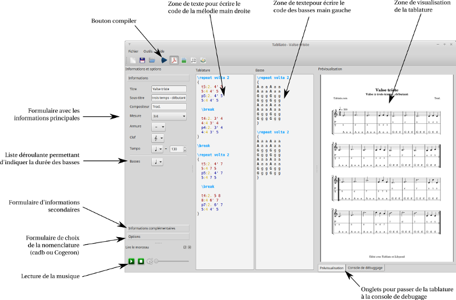

Utilisation de Tabliato
- Première utilisation
- Charger des exemples
- Exporter la tablature
- Syntaxe : comment écrire une tablature
- Debuggage en cas d'erreur
Première utilisation
La première fois que Tabliato se lance, la Valse Trise est préchargée. Le code écrit peut paraître abscon et l'apperçus est vide. Pour générer une tablature vous devez cliquer sur le bouton « compiler ». Si Tabliato et Lilypond sont bien installés il n'y aura aucun problème. Vous verrez apparaître une image de la tablature. Une fois que la tablature est apparue c'est que tout est bon. Vous pourrez écouter la musique.
Charger des exemples
Pour vous familiariser avec le logiciel vous pouvez charger des exemples pré-installés en allant dans fichier->Ouvrir un exemple (Ctrl + Maj + O)
Exporter la tablature
Pour pouvoir exporter la tablature et récupérer un pdf vous devez préalablement enregistrer le fichier Tabliato (format .dtb). Ensuite, lorsque vous compilez la tablature, le pdf, l'image ou la musique se retrouve au même endroit que le fichier Tabliato et portent le même nom.
Notez que quand vous ouvrez un fichier d'exemple, celui-ci est toujours considéré comme non enregistré. Vous devez préalablement enregistrer le fichier dans vos documents pour récupérer le pdf.
Syntaxe : comment écrire une tablature
La syntaxe est directement héritée de Lilypond. Et pour cause Tabliato se base sur Lilypond. Allez dans Aide->Aide de Tabliato->Écrire une tablature pour accéder à une documentation permettant de comprendre simplement la syntaxe.
Debuggage en cas d'erreur
Si le code n'est pas correct, la tablature va, au mieux avoir des erreurs, au pire ne pas pouvoir être créée. Si elle n'est même pas créée vous aurez un message vous invitant à regarder la réponse de Lilypond dans la console. La réponse est souvent difficile à lire et à comprendre. Si vous ne comprennez pas le message il faudra tatonner pour trouver votre erreur.
Astruce : si le code est mal coloré c'est qu'il y a, a priori, une erreur.